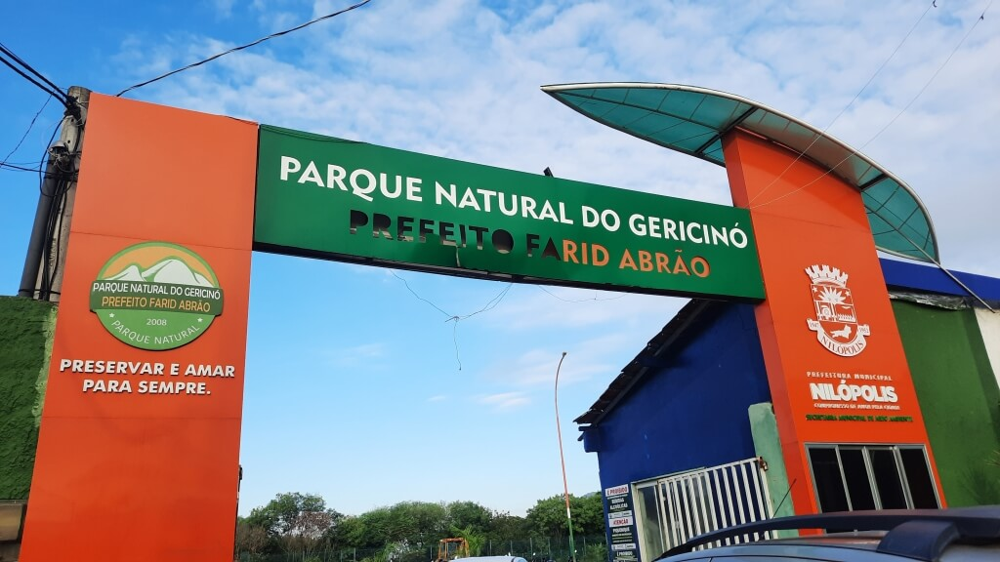
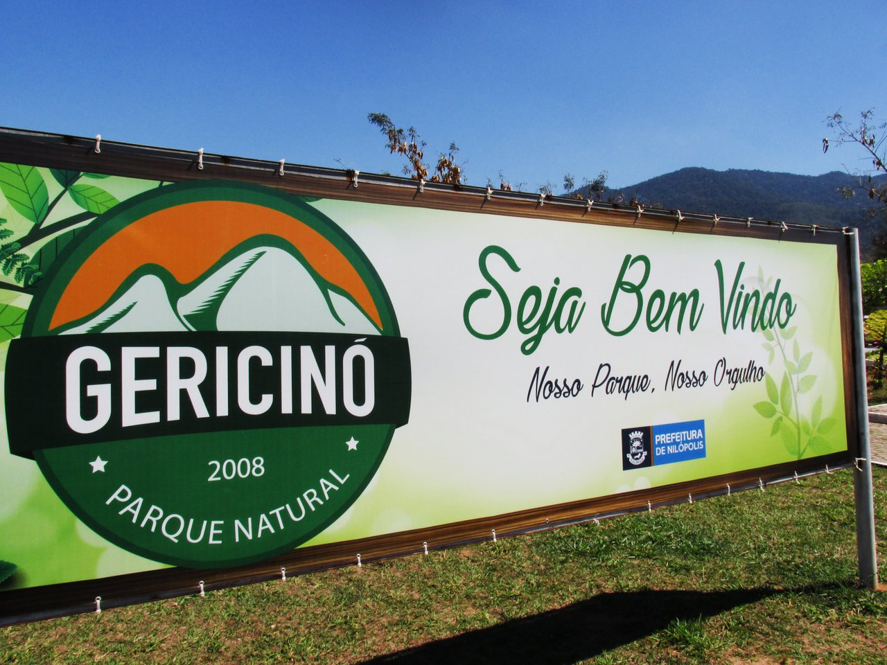
 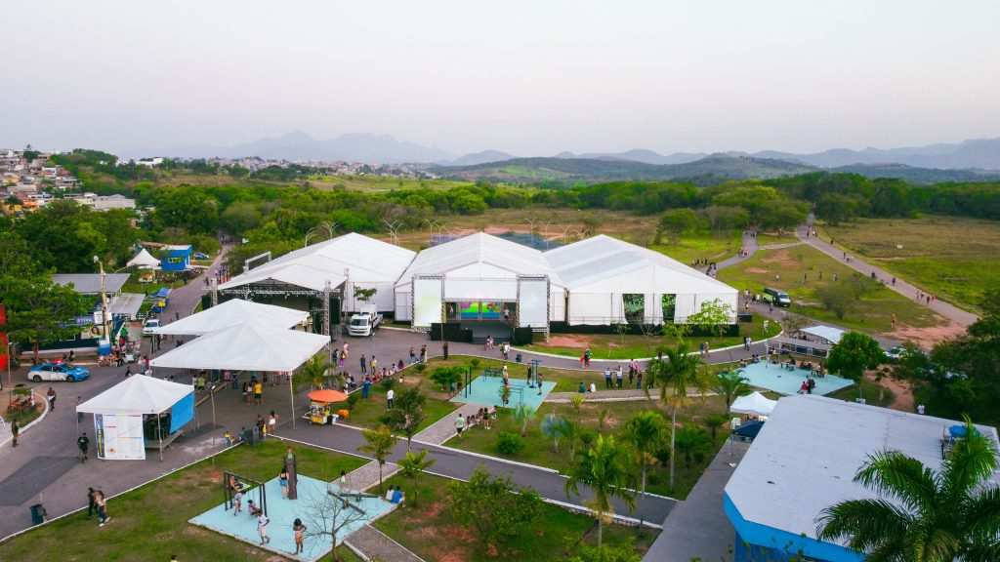
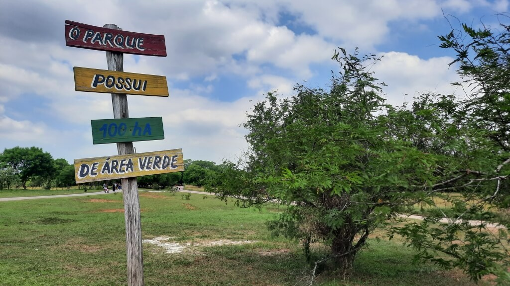
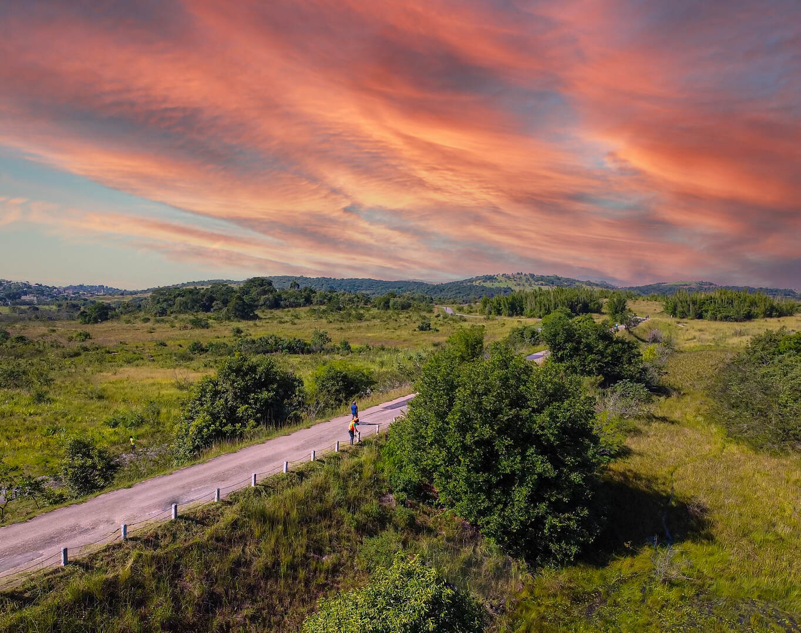
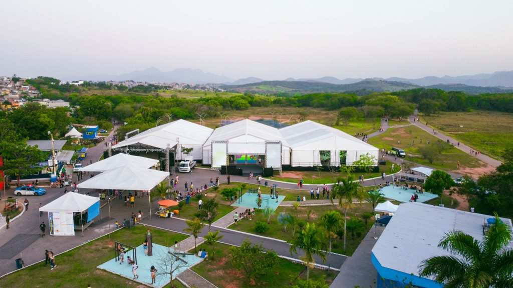
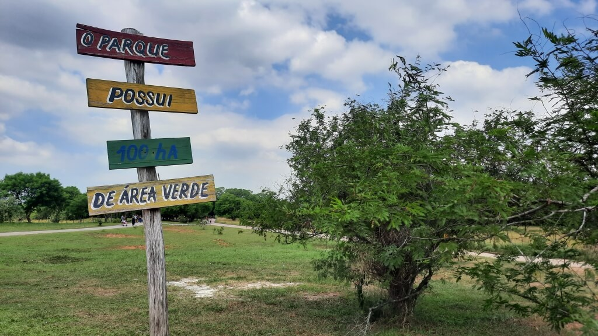
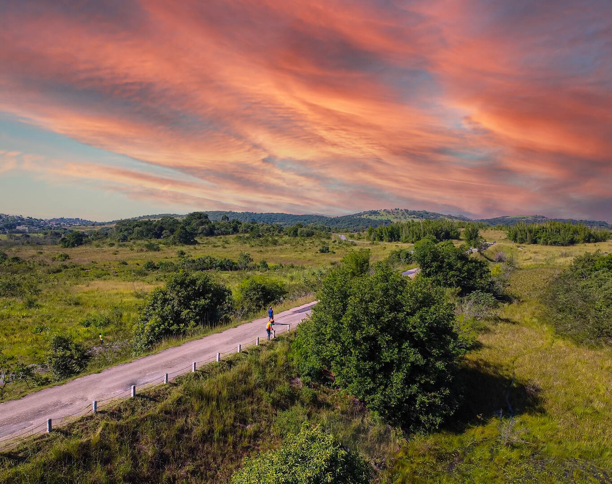
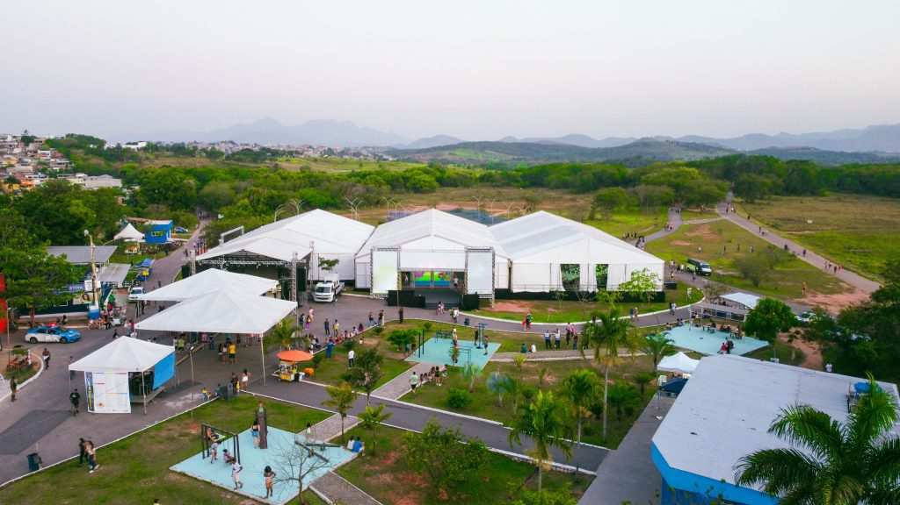
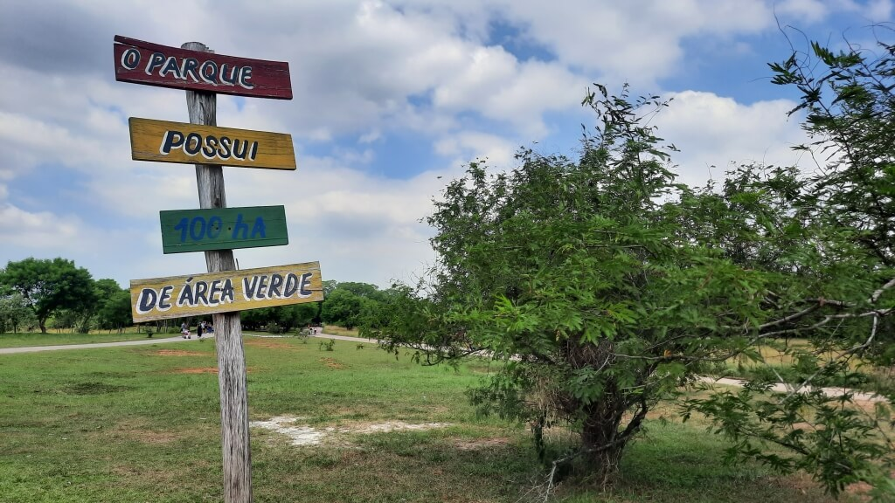
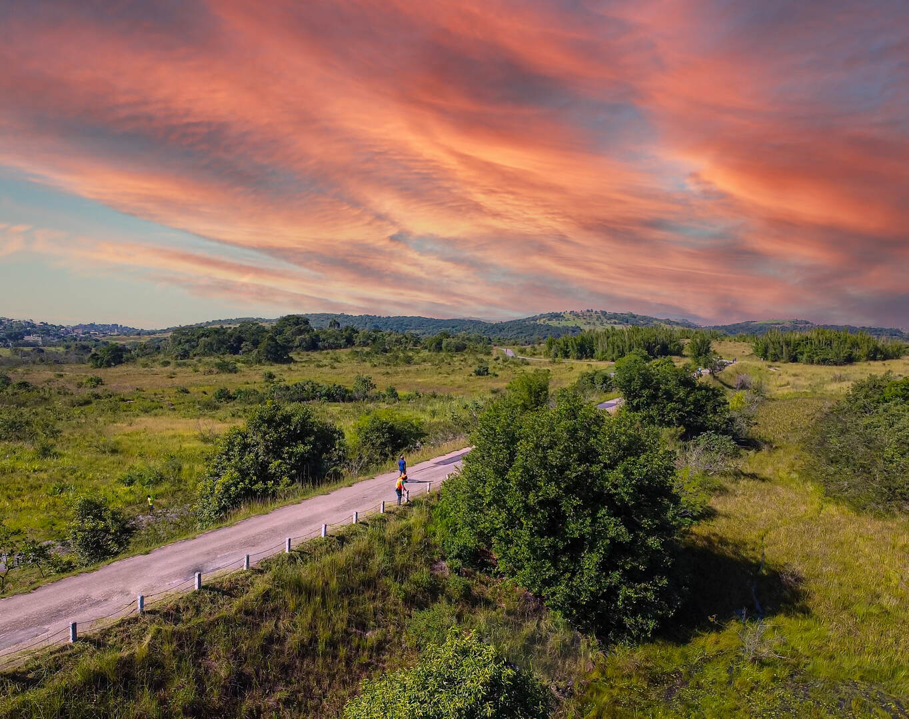
O Parque do Gericinó
O Parque Natural Municipal do Gericinó Prefeito Farid Abrão. Ele está localizado na cidade de Nilópolis, no estado do Rio de Janeiro, Brasil. O parque foi criado em 2004 e tem uma área total de cerca de 62 hectares. É um importante espaço de preservação da Mata Atlântica, além de ser um local de lazer e educação ambiental para a população local e visitantes. O parque conta com diversas trilhas para caminhada, um mirante, viveiros de plantas, lago e espaço para piquenique. É um ótimo lugar para quem deseja estar em contato com a natureza e desfrutar de um momento de tranquilidade.
Duração Cerca de 2 a 4 horas.
Faixa etária: A partir de 6 anos, com segurança garantida.
Melhor época: De março a agosto, devido às condições climáticas mais estáveis.
Custo médio R$ 120 a R$ 180 por pessoa, dependendo do serviço. Consultar antes os valores.
Segunda a domingo das 08:00 as 18:00.
Acessibilidade: Não possui.
Faixa etária: A partir de 6 anos, com segurança garantida.
Melhor época: De março a agosto, devido às condições climáticas mais estáveis.
Custo médio R$ 120 a R$ 180 por pessoa, dependendo do serviço. Consultar antes os valores.
Segunda a domingo das 08:00 as 18:00.
Acessibilidade: Não possui.